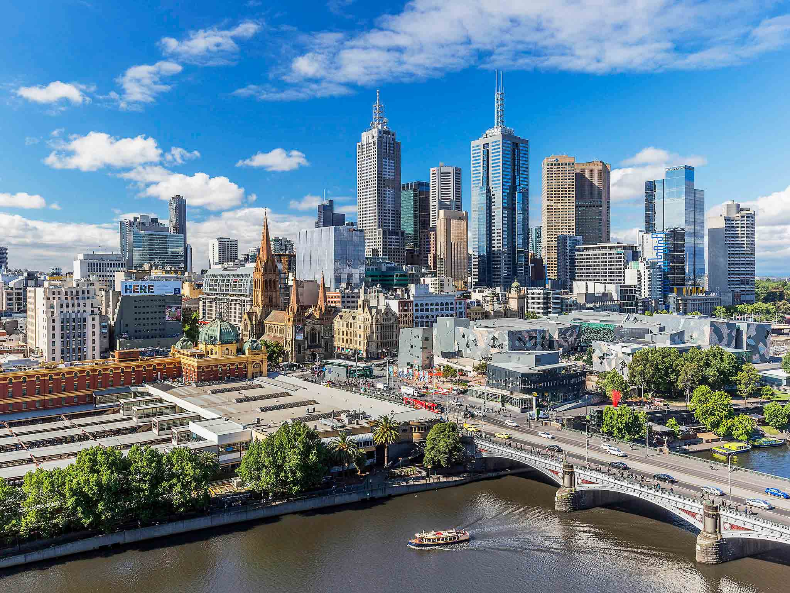
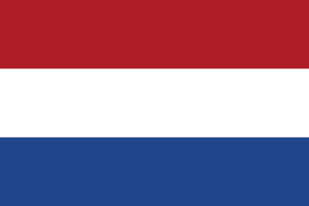
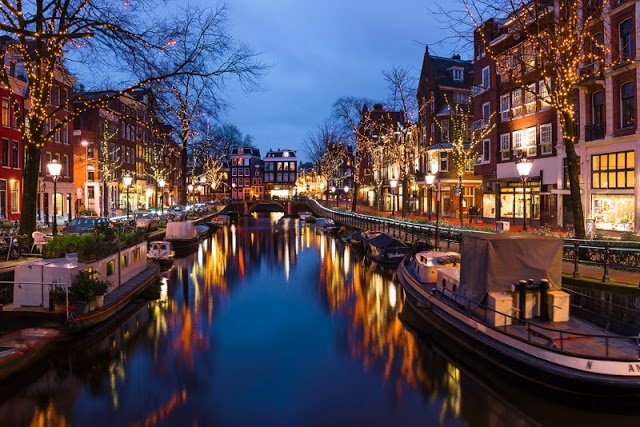
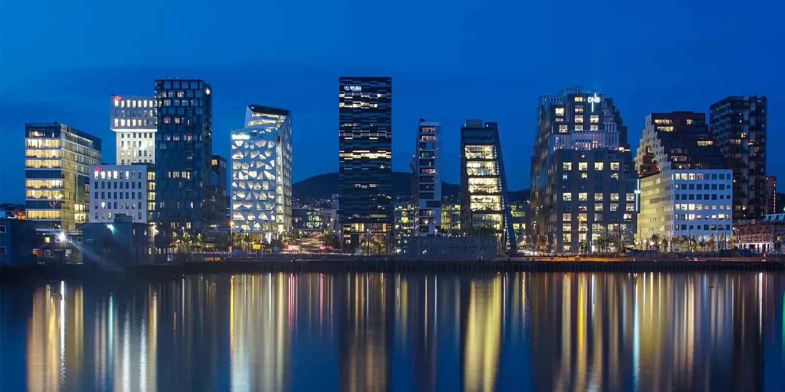
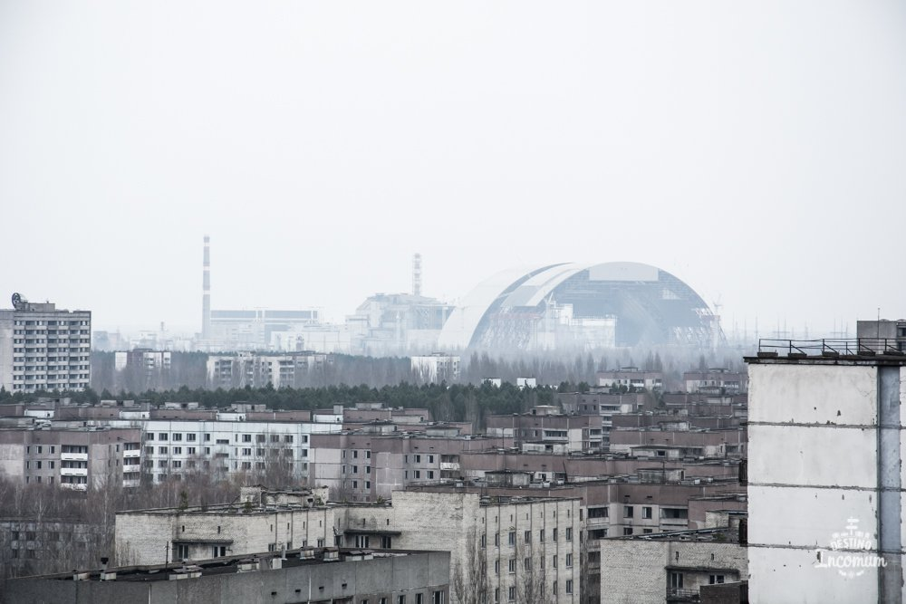
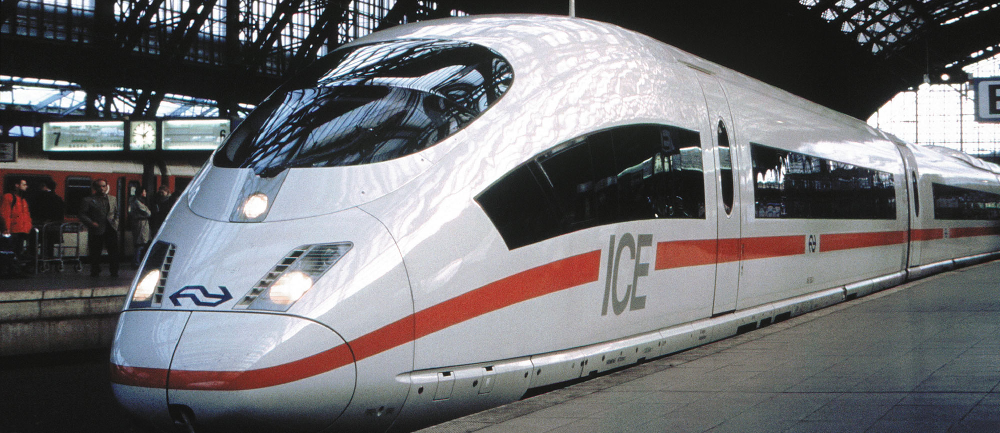

Melbourne - Austrália


| Clima | Subtropical |
| Língua | Inglês |
| Governo | Monarquia constitucional |
| Chefe de Estado | Isabel II |
| Temperatura máxima - Junho | 14ºC |
| Temperatura mínima - Junho | 8ºC |
Amsterdã - Holanda 
| Clima | Temperado oceânico |
| Língua | Holandês |
| Governo | Monarquia constitucional |
| Chefe de Estado | Guilherme Alexandre |
| Temperatura mínima - Junho | 11ºC |
| Temperatura máxima - Junho | 17ºC |
Oslo - Noruega


| Clima | Temperado oceânico |
| Língua | Inglês |
| Governo | Monarquia constitucional |
| Chefe de Estado | Haroldo V |
| Temperatura mínima - Junho | 12ºC |
| Temperatura máxima - Junho | 21ºC |
Vancouver - Canadá

| Clima | Temperado continental |
| Língua | Inglês |
| Governo | Democracia parlamentar e monarquia constitucional |
| Chefe de Estado | Isabel II |
| Temperatura máxima - Junho | 20ºC |
| Temperatura mínima - Junho | 12ºC |
Chernobyl - Ucrânia
| Informações relevantes | Local abandonado devido ao desastre nuclear; há somente cerca de 500 habitantes; aberta ao turismo |
| Temperatura máxima - Junho | 23ºC |
| Temperatura mínima - Junho | 12ºC |
Frankfurt - Alemanha


| Nome | ICE 3 |
| Velocidade máxima | 300 km/h |
| Destino | Berlim |
| Justificativa | Muito interesse em viajar de trem-bala |